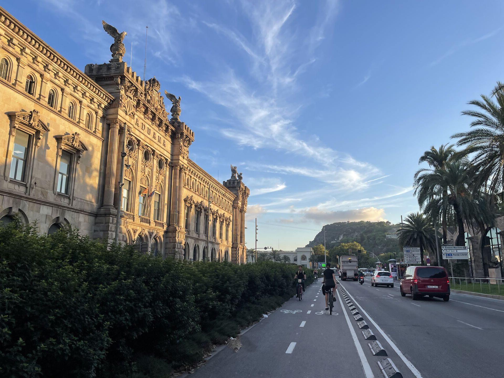
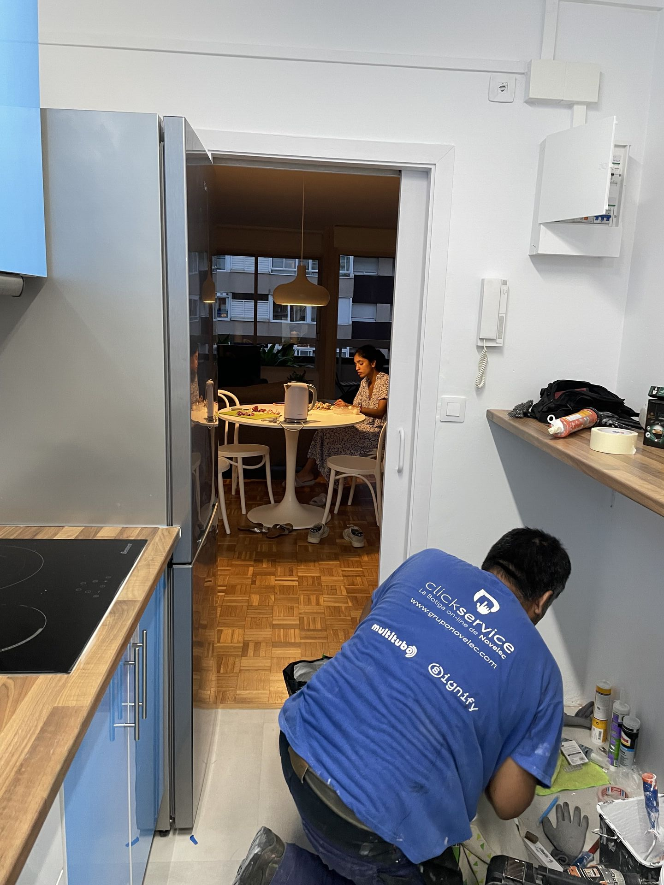
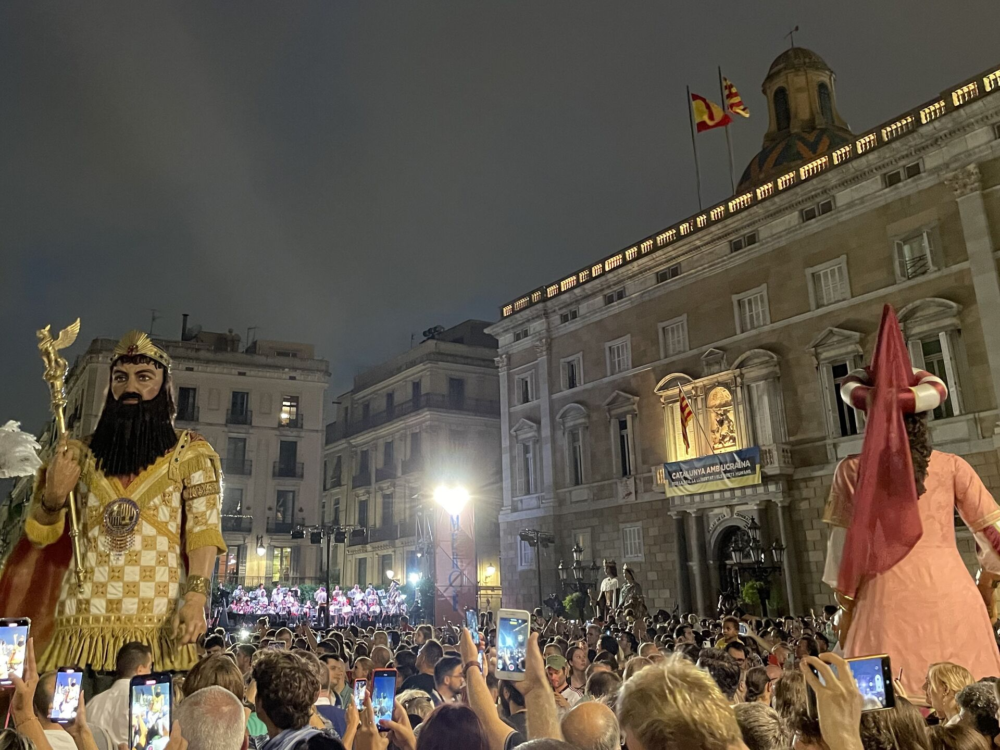
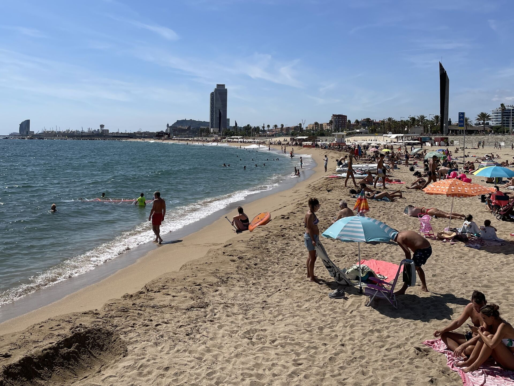
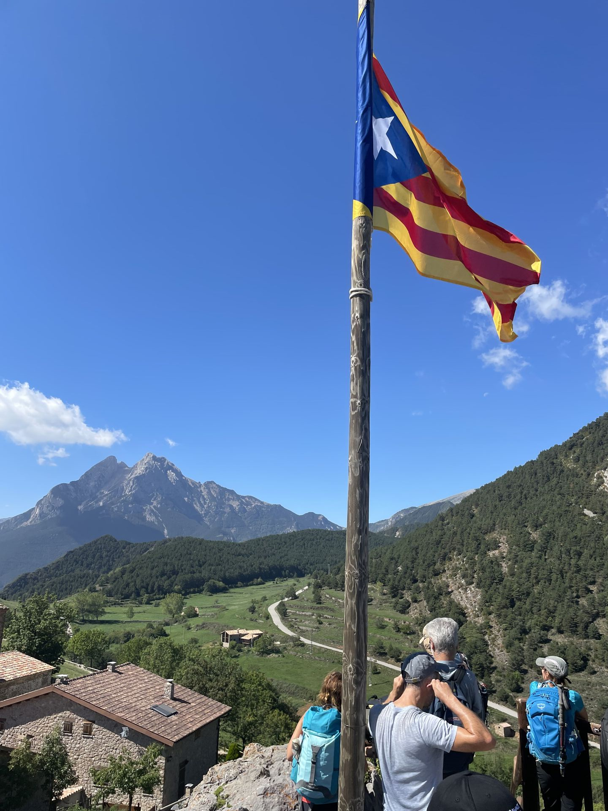
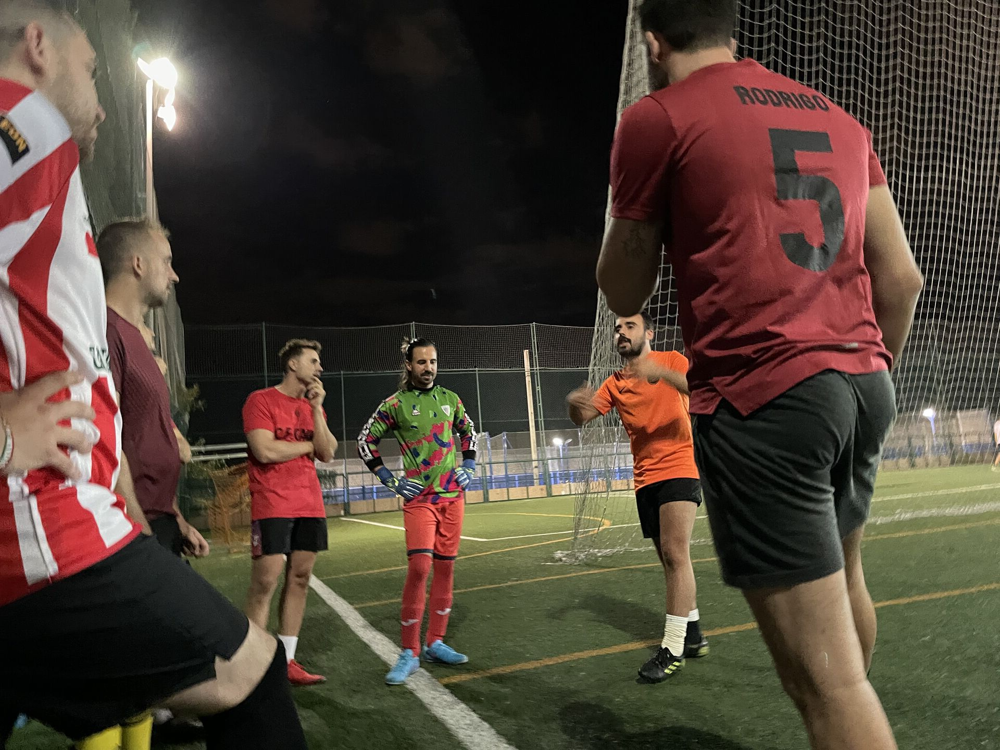

04 Voor alles een
eerste keer
Als Nederlander op de fiets,
onverwachte tegenslagen
en activiteiten in de vrije tijd

Je kunt goed zien dat Barcelona een stad gericht is op toeristen. Op straat staan herkenbare rode fietsen die mensen dagelijks voor een vast bedrag per maand kunt gebruiken. Bij aankomst in het fietsenrek kan je kiezen voor een gewone of een elektrische fiets maar voor de elektrische fiets betaal je een centje extra. Zou het bedacht om echt te verduurzamen of is het gewoon een slim marketingmodel waarbij fietsers worden verleid om voor meer comfort de elektrische fiets te pakken? Wat wel handig is, is dat je niet naar de fietsenmaker hoeft als er iets met je fiets aan de hand is. Maar daartegenover staat dat je naar een bepaald stallingspunt toe moet om je fiets op te halen en af te zetten, waarbij je als je pech hebt moet uitwijken naar een ander punt omdat er geen fiets is of de stalling vol zit. Huur je een fiets langer dan een half uur komt er nog een toeslag bovenop per tijdseenheid. Je raadt het misschien al, maar dit is voor iemand zoals als ik, die dagelijks de fiets gaat gebruiken niet werkzaam.
 De vrijheid om te kunnen gaan en staan met je eigen fiets was mij als Nederlander teveel waard en dus ging ik Facebook marktplaats afstruinen naar een fiets. Hierbij kreeg ik meteen een opvallende eerste indruk kreeg van contacten met Spanjaarden. Tot vier keer toe waren we een heel eind met de berichtenwisseling tot ik plotseling niets meer van hen hoorde. 5 keer scheepsrecht zullen we maar zeggen, want ik mocht langskomen en ik streek over mijn hart door toch nog maar een keer de metro te pakken naar Barcelona-Noord waar een enthousiaste Spanjaard samen met zijn dochter vol trots met de mountainbike op mij stonden te wachten. De beste man woonde in de Anna-Frank straat en ik probeerde nog even te polsen of hij wist waar die naam vandaan kwam maar het leek erop van niet. Hij gaf mij nog twee sloten mee. Ik kon uit zijn gebaren opmaken dat een slot niet genoeg zou zijn omdat ook de wielen hier zonder pardon kunnen worden gestolen. Toen ik de fiets eenmaal had was ik zo opgelucht en blij dat ik er direct mee naar zee ben gefietst en hier lekker heb gezwommen. Een fiets wat een vanzelfsprekendheid is in Nederland, is nu mijn grote steunpilaar.
De vrijheid om te kunnen gaan en staan met je eigen fiets was mij als Nederlander teveel waard en dus ging ik Facebook marktplaats afstruinen naar een fiets. Hierbij kreeg ik meteen een opvallende eerste indruk kreeg van contacten met Spanjaarden. Tot vier keer toe waren we een heel eind met de berichtenwisseling tot ik plotseling niets meer van hen hoorde. 5 keer scheepsrecht zullen we maar zeggen, want ik mocht langskomen en ik streek over mijn hart door toch nog maar een keer de metro te pakken naar Barcelona-Noord waar een enthousiaste Spanjaard samen met zijn dochter vol trots met de mountainbike op mij stonden te wachten. De beste man woonde in de Anna-Frank straat en ik probeerde nog even te polsen of hij wist waar die naam vandaan kwam maar het leek erop van niet. Hij gaf mij nog twee sloten mee. Ik kon uit zijn gebaren opmaken dat een slot niet genoeg zou zijn omdat ook de wielen hier zonder pardon kunnen worden gestolen. Toen ik de fiets eenmaal had was ik zo opgelucht en blij dat ik er direct mee naar zee ben gefietst en hier lekker heb gezwommen. Een fiets wat een vanzelfsprekendheid is in Nederland, is nu mijn grote steunpilaar.
De fiets bracht mij heerlijk snel naar de supermarkt, de bibliotheek of naar een kennismaking. Maar die ritjes gingen niet zonder slag of stoot. Op het eerste gezicht lijkt fietsen appeltje eitje omdat alle straten eenrichtingsstraten zijn. Máár, omdat het fietsen hier niet zo populair is als in Nederland hebben maar een paar straten fietspaden, welke soms op bizarre punten stoppen en vervolgens als je geluk hebt aan de andere kant van de straat weer verder gaan. Als je de juiste straat gevonden hebt waarbij je dus niet tegen het verkeer in rijdt tussen het denderende verkeer dan begrijp je waarom veel mensen hier met een helm op fietsen. Op enig moment kreeg ik er een beetje handigheid in, mede door een paar Spanjolen op elektrische stepjes te volgen. Een langere route maar waarop je wel kon door rijden bleek vele malen sneller dan het nemen van de kortste route. Die ‘snelle’ route om in het centrum te komen eigenlijk bestaande uit twee straten is al een beleving op zich. Barcelona ligt in een dal omgeven door bergen, dus ik rij eerst een kilometer lange vals platte weg de berg af naar het Christopher Columbus beeld om vervolgens over de boulevard met palmbomen tussen de toeristen door te zigzaggen, langs het strand om uiteindelijk in het centrum uit te komen.
Afgelopen maandag wilde ik vol energie thuis aan de slag maar moest ik eerst nog even boodschappen doen omdat op zondag hier alle winkels dicht zijn. De good old Lidl ging pas om 9 uur open en dus dacht ik, ach dat uurtje later starten kan geen kwaad. Maar toen ik thuis kwam bleken de klusjesmannen nog wat werk te moeten afmaken in ons appartement wat gepaard ging met veel lawaai en Latijns-Amerikaanse muziek en dus besloot ik maar uit te wijken naar een lokale bieb in mijn straat. Toen ik hier echter aankwam bleek de bieb op maandag gesloten te zijn. Dan maar de fiets naar de centrale bieb, maar vervolgens bleek er een slag in mijn het wiel te zitten waardoor de fiets constant remde. Een fietsenmaker vertelde mij dat de fiets van de Decathlon was en dat ze dit daar zouden kunnen verhelpen. Vervolgens heb ik met de inbussleutel van de buren de achterremblokken er maar afgehaald waarna ik via de zojuist beschreven route dan eindelijk kon vertrekken universiteit Pompeu Fabra. Je leert hier vooral om alles maar te nemen zoals het is, en uiteindelijk heb ik pas rond het middaguur kunnen starten met de werkdag. In Nederland ben ik super gehecht aan bepaalde spullen zoals het tweede computerscherm, het verse brood van de bakker of een fancy bureaustoel. Maar hier heb je niet altijd die luxe en het dwingt je om het soms ook even te doen met wat minder.
De fiets, werkend warm water, fles wasmiddel, matrastopper, baguettes, vertrouwde foto’s aan de muur in mijn slaapkamer; het zijn vanzelfsprekende spullen die geweldig bijdroegen aan het landen in Barcelona. Zo begon het leven vorm te krijgen. Ik kookte voor huisgenoot Pouya een pastaatje met ansjovis en zij trok een flesje rode wijn open in Parijs blijkbaar ook koud kan worden gedronken. Ik werd op vrijdag door Dorien, de zus van een vriendin uit Bavel uitgenodigd voor een barbecue en daar was meteen de Spaanse vuurdoop omdat er op haar dakterras zo’n 10 mensen aanwezig waren die met elkaar enkel Spaans spraken. Wat was ik blij dat ik het afgelopen jaar Spaanse lessen heb gevolgd heb aan de Wageningen Universiteit. Mijn Spaans is alles behalve vloeiend maar met een paar basiszinnen lukte het toch aardig om via de standaard levensvragen tot interactie te komen. Ieder woordje wat je oppikt kun je vervolgens weer gebruiken in een volgend gesprek. Zo is er een lange weg te gaan, maar ik ben super gemotiveerd om het Spaans te leren, en probeer daarom ook zoveel mogelijk met lokale mensen in contact te komen.
Een zeer populaire app hier is Meetup. Of je nou van kunst houdt, gamen of wat dan ook, je kunt het zo gek niet bedenken of er is wel een Meetup-groep waarbij je met een druk op de knop kan deelnemen aan activiteiten. Omdat ik erg benieuwd was naar andere mensen die met de computer in het buitenland werkten had ik mij aangemeld voor de Meetup-Digital Nomads groep. Remote working of in het Spaans teletrabajo is vooral in Barcelona booming. Het deed me erg goed om onder het genot van een biertje in een 360 graden bar eens van anderen te horen wat ze remote deden en hoe ze het aanpakten. Ik ontmoette de Nederlandse Ruben die de website tafeldiploma.nl heeft opgezet en iemand die de lay-out voor een casino website beheerde. En de Russische Cyriel die een website heeft opgezet waarop ouders hun kind konden aanmelden voor een meerdaagse buitenlandse reis, voor de culturele ervaring en uiteraard voor ouders om zelf even te kunnen genieten van de rust. Het is hier normaal om richting de barman een vuist te maken en je pink en duim uit te steken als teken om nieuwe biertjes te bestellen. De ene digital nomad bood via YouTube yoga lessen aan terwijl de ander huisverhuurders ontzorgde door de contactwisseling via AirBNB uit handen te nemen. Ze woonden in Barcelona en werkten voor een markt in Engeland, Colombia, Duitsland of Italië. Mijn situatie voelde opeens een stuk minder vreemd, al moest ik wel even nadenken hoe ik ging antwoorden wanneer mensen vroegen wat ik deed. Ecoloog of programmeur, werkend bij bedrijf of onderzoeker, voor deze avond hield ik het maar even op dierenonderzoeker. Ik kwam erachter dat digital nomads een veel bredere term is dan programmerende computeraars. In iedere branche van de samenleving lijkt er voor digital nomads wel een plekje te zijn om zijn of haar brood te kunnen verdienen, al heb ik jammer genoeg nog niemand ontmoet die zich ook met artificial intelligence bezig houdt.
 Ik was natuurlijk benieuwd wat die Meetup app nog meer te bieden had en vond de Meetup-hiking groep. Zo maakte ik op zaterdag een fantastische hike in de Pyreneeën waar ik een weekje geleden bij aankomst nog met het vliegtuig overvloog. Met een flinke pas erin klommen we zo’n 1300 meter een behoorlijk grote berg op, vanwaar je pikzwarte grotten in kon. De gemiddelde leeftijd lag tussen de 40 en de 60 jaar en het waren voornamelijk vrijgezelle Spanjaarden. Het maakte voor mij niet uit, want het was een hele gezellige dag met mensen die het bovendien heel leuk vonden om mij wat Spaanse gesprekken te oefenen. Het was heerlijk om even uit de drukke stad te zijn. Een dagje niet computeren vonden de vingers ook niet erg. De afgelopen jaren heb ik altijd gewerkt in het weekend en hierdoor was het gevoel van echt weekend hebben al lang geleden. Het voelt zo heerlijk om helemaal vrij te zijn en lekker de tijd te nemen voor totaal andere dingen. Zondagochtend lekker een koffietje gedronken voor €1,40 en Spaans krantje proberen door te worstelen. Daarin werd vol lof gesproken over het FC Barcelona van Xavi. Zo proberen ze Ronald Koeman hier snel weer te vergeten.
 Tot slot nog even, via de facebookgroep ‘Expats Barcelona’ in contact gekomen met Pablo. Hij vroeg me een met zijn team mee te komen voetballen. Afgelopen woensdag ben ik gaan kijken en echt hele toffe gasten, die net doen alsof ze er niet veel van kunnen maar toch een behoorlijk balletje kunnen trappen. Een jongen grapte na afloop ‘ja en trouwens, we hebben twee jongens die zijn belasting advocaat dus mocht je problemen hebben dan helpen we je zo!’. Het zijn van die kleine geintjes die je zo erg helpen om je op je gemak te voelen als blonde jongen in een wildvreemde omgeving. Ook heb ik een balletje opgegooid bij een Salsa school bij mij om de hoek. Sinds mijn studietijd in Wageningen heb ik Salsa LA (Los Angeles Style) geoefend en ik vond mezelf dusdanig ervaren dat ik ervan overtuigd was dat het gemiddelde niveau precies goed bij mij zou passen. Hoewel de les ontzettend gaaf was, bleken de Spaanse standaarden toch wel veel hoger te liggen waardoor ik op advies van de docent met opgeheven hoofd volgende week dinsdag met de beginners les mag starten. Het is trouwens salsa Cubana wat heel anders is dan salsa LA omdat je in een notendop meer opzij beweegt dan naar voor en achter. Toevallig bleek Daniel ook van plan om op dit niveau deel te nemen dus super gezellig om daar samen heen te gaan. Ik heb ook mail contact met mensen van een theater hier om wat vrijwilligerswerk te gaan doen. Lijntjes uitgooien en proberen. Voor alles een eerste keer. Zo krijgt de week langzaam vorm en hoop ik voldoende ruimte over te blijven houden voor spontane ideeën. Jullie horen snel hoe het allemaal zal verlopen. Warme groeten uit Barcelona!